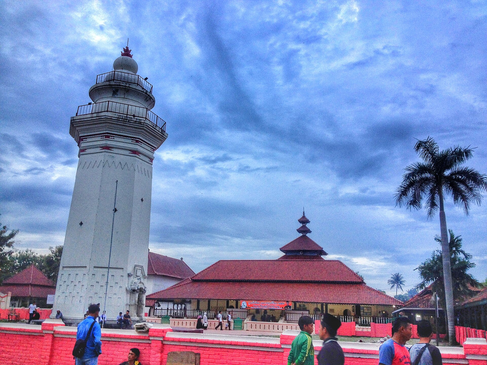
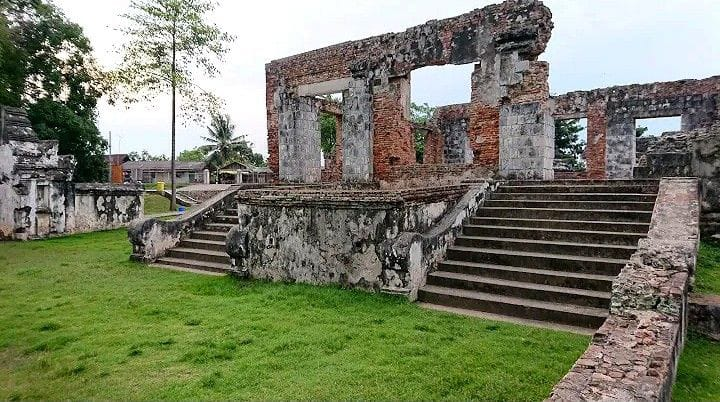
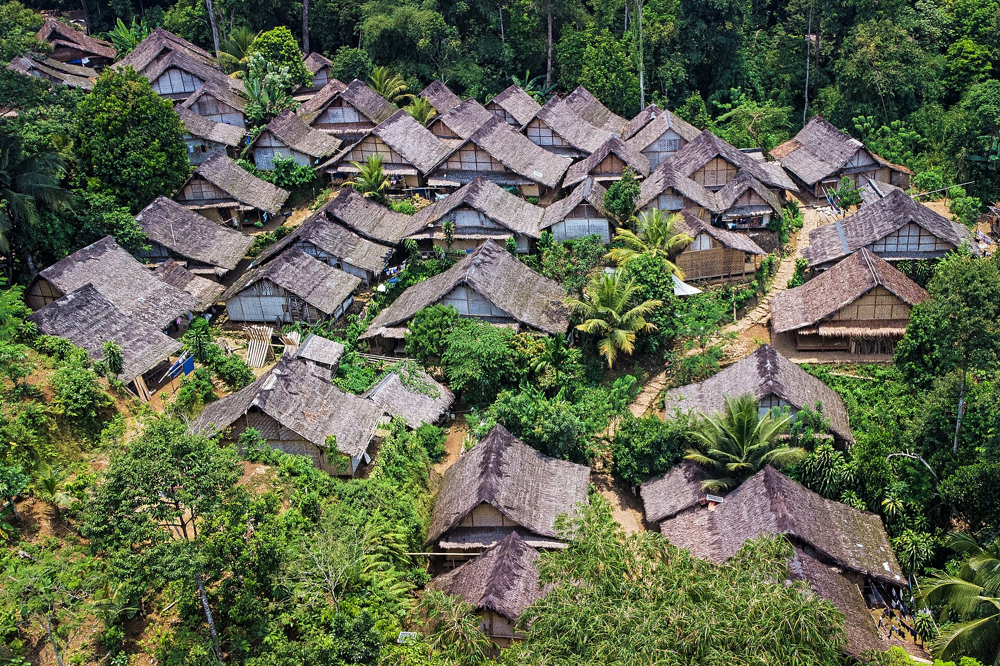
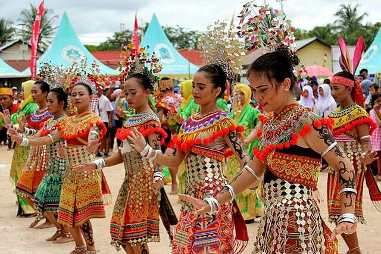
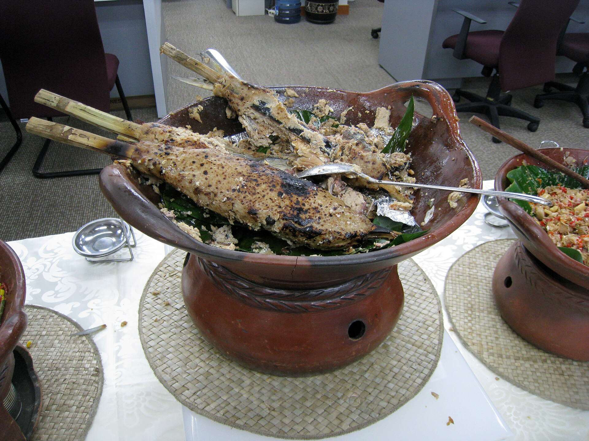
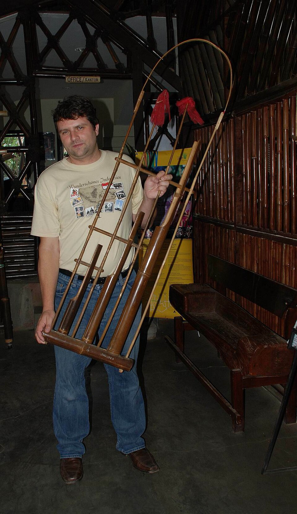

Galeri
Kumpulan foto terbaik dari keindahan, budaya, sejarah, dan kekayaan Banten yang penuh makna.

Pantai Anyer

Taman Nasional Ujung Kulon

Tanjung Layar

Pantai Tanjung Lesung

Masjid Agung

Keraton Surosowan

Rumah Adat Banten

Tari Tradisional Banten

Sate Bandeng
